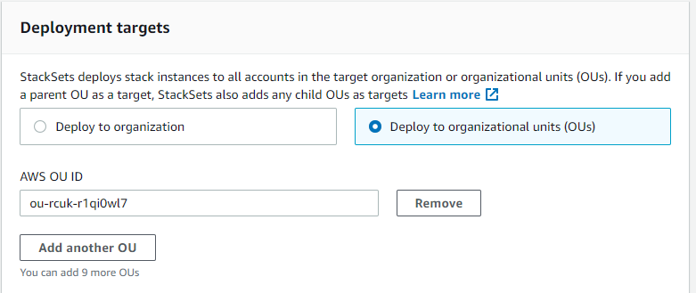

Les traductions sont fournies par des outils de traduction automatique. En cas de conflit entre le contenu d'une traduction et celui de la version originale en anglais, la version anglaise prévaudra.
Créer un ensemble de piles
Vous pouvez créer un ensemble de piles à l'aide de AWS Management Console ou des commandes AWS CloudFormation dans le AWS CLI. Vous pouvez créer un ensemble de piles avec les autorisations self-managed ou service-managed.
Avec des autorisations self-managed, vous pouvez déployer des instances de pile sur des Comptes AWS spécifiques dans des régions spécifiques. Pour ce faire, vous devez d'abord créer les rôles IAM nécessaires pour établir une relation de confiance entre le compte à partir duquel vous administrez l'ensemble de piles et le compte sur lequel vous déployez des instances de pile.
Avec des autorisations service-managed, vous pouvez déployer des instances de pile sur des comptes gérés par AWS Organizations dans des régions spécifiques. Avec ce modèle, vous n'avez pas besoin de créer les rôles IAM nécessaires ; StackSets crée les rôles IAM en votre nom. Vous pouvez également activer des déploiements automatiques sur des comptes qui seront ajoutés à une organisation cible ou à une unité d'organisation (UO) à l'avenir. Lorsque les déploiements automatiques sont activés, StackSets supprime automatiquement les instances de pile d'un compte si elles sont supprimées d'une organisation cible ou d'une unité d'organisation.
Rubriques
Créer un ensemble de piles avec des autorisations autogérées
Rubriques
Créez un ensemble de piles avec des autorisations autogérées à l'aide de la AWS Management Console
Ouvrez la console AWS CloudFormation à l'adresse https://console.aws.amazon.com/cloudformation
. -
Choisissez StackSets dans le volet de navigation.
-
En haut de la page StackSets, choisissez Create StackSet (Créer un ensemble de piles).
-
Sous Prerequisite - Prepare template (Prérequis - Préparer le modèle), choisissez Use a sample template (Utiliser un exemple de modèle).
-
Sous Select a sample template (Sélectionner un exemple de modèle), dans le menu déroulant, choisissez le modèle Enable AWS config (Activer la configuration AWS). Sélectionnez Suivant.

-
Sur la page Specify StackSet details (Spécifier les détails de l'ensemble de pile), fournissez les informations suivantes.
-
Indiquez un nom pour l'ensemble de piles. Les noms des ensembles de piles doivent commencer par un caractère alphabétique et ne contenir que des lettres, des chiffres et des tirets. Dans cette procédure, nous utiliserons le nom
my-awsconfig-stackset. -
Vous êtes invité à spécifier des valeurs pour les paramètres utilisés par AWS Config. Pour plus d'informations sur ces paramètres, veuillez consulter la rubrique Configuration d'AWS Config avec la console dans le Guide du développeur AWS Config. Dans cette procédure, nous conservons les paramètres par défaut pour tous les paramètres AWS Config.
-
Vous pouvez configurer les mises à jour Amazon Simple Notification Service (SNS) par e-mail, en fonction du contenu du journal, à l'aide des paramètres TopicARN et NotificationEmail. Dans le cadre de la présente procédure, nous ne configurons pas les mises à jour Amazon SNS.
-
Vous pouvez configurer le canal de livraison pour les mises à jour et les notifications à l'aide des paramètres DeliveryChannelName et Frequency. Pour plus d'informations sur le canal de livraison dans AWS Config, consultez Gestion du canal de livraison dans le Manuel du développeur AWS Config. Dans le cadre de cette procédure, nous conservons les paramètres par défaut dans cette zone.
-
-
Lorsque vous avez fini de spécifier les paramètres AWS Config, choisissez Suivant.
-
Sur la page Configure StackSet options (Configurer les options d'ensemble de piles), ajoutez une balise en spécifiant une paire clé-valeur. Dans cette procédure, nous créons une balise appelée Stage, avec une valeur Test. Les balises que vous appliquez aux ensembles de piles sont appliquées à toutes les ressources qui sont créées par vos piles. Pour en savoir plus sur l'utilisation des balises dans AWS, consultez Utilisation des balises de répartition des coûts dans le Guide de l'utilisateur AWS Billing and Cost Management.
Laissez les autorisations non spécifiées.
-
Pour Execution configuration (Configuration de l'exécution), choisissez Active pour que StackSets effectue simultanément des opérations non conflictuelles et mette les opérations conflictuelles en file d'attente. Une fois les opérations conflictuelles terminées, StackSets lance les opérations en file d'attente dans l'ordre des demandes.
Note
S'il existe déjà des opérations en cours ou en file d'attente, StackSets met en file d'attente toutes les opérations entrantes, même si elles ne sont pas conflictuelles.
Vous ne pouvez pas modifier la configuration d'exécution de votre ensemble de piles pendant que des opérations sont en cours d'exécution ou en file d'attente pour cet ensemble de piles.
-
Choisissez Next (Suivant).
-
Sur la page Définir les options de déploiement, indiquez les comptes et régions dans lesquels vous souhaitez que les piles soient déployées dans votre ensemble de piles.
AWS CloudFormation déploiera les piles dans les comptes spécifiés dans la première région, puis passera à la suivante, et ainsi de suite, tant que les échecs de déploiement d'une région ne dépasseront pas la tolérance aux pannes spécifiée.
-
Pour Accounts (Comptes), choisissez Deploy stacks in accounts (Déployer des piles dans des comptes). Collez vos numéros de compte de destination dans la zone de texte, en séparant les numéros par des virgules.
-
Pour Specify regions (Spécifier des régions), choisissez Région USA Est (Virginie du N.). Répétez l'opération pour la région Région USA Ouest (Oregon). Cliquez sur la flèche vers le haut en regard de Région USA Ouest (Oregon) pour la placer en tête de liste. L'ordre des régions sous Specify regions (Spécifier des régions) détermine l'ordre de leur déploiement.
-
Pour Deployment options (Options de déploiement) :
-
Pour Maximum concurrent accounts (Nombre maximal de comptes en parallèle), conservez les valeurs par défaut Number (Nombre) et 1.
Ainsi, AWS CloudFormation déploiera votre pile dans un seul compte à la fois.
-
Pour Failure tolerance (Tolérance aux pannes), conservez les valeurs par défaut Number (Nombre) et 0.
Cela signifie qu'un seul déploiement de pile au maximum peut échouer dans l'une de vos régions spécifiées avant qu'AWS CloudFormation n'arrête le déploiement dans la région actuelle et n'annule le déploiement dans les régions restantes.
-
-
Pour Region concurrency (Simultanéité de région) :
-
Sélectionnez Sequential (Séquentiel) ou Parallel (Parallèle) pour déterminer l'ordre de déploiement de StackSets pour les régions spécifiées. Par défaut, Sequential (Séquentiel) est sélectionné.
Sélectionnez Suivant.
-

-
-
Sur la page Review, vérifiez vos choix et les propriétés de votre ensemble de piles. Pour effectuer des modifications, choisissez Edit (Modifier) dans la zone dans laquelle vous souhaitez modifier les propriétés. Avant de pouvoir créer l'ensemble de piles, vous devez cocher la case dans la zone Capacités pour confirmer que certaines des ressources que vous créez avec l'ensemble de piles peut nécessiter de nouvelles ressources et autorisations IAM. Pour plus d'informations sur les autorisations potentiellement requises, veuillez consulter la rubrique Confirmation des ressources IAM dans les modèles AWS CloudFormation de ce guide. Lorsque vous êtes prêt à créer votre ensemble de piles, choisissez Submit (Soumettre).

-
AWS CloudFormation commence à créer votre ensemble de piles. Vous pouvez afficher la progression et le statut de la création des piles de votre ensemble de piles dans la page des détails de l'ensemble de piles, qui s'ouvre lorsque vous choisissez Submit (Soumettre).

Créez un ensemble de piles avec des autorisations autogérées à l'aide de la AWS CLI
Lorsque vous créez des ensembles de piles à l'aide des commandes de l'AWS CLI, vous exécutez deux commandes distinctes : create-stack-set pour charger votre modèle et créer le contenant de l'ensemble de piles, et create-stack-instances pour créer les piles dans l'ensemble de piles. Commencez par exécuter une commande de l'AWS CLI, create-stack-set, pour charger l'exemple de modèle AWS CloudFormation qui active AWS Config, puis démarrez la création de l'ensemble de piles.
-
Ouvrez la AWS CLI.
-
Exécutez la commande suivante.
Pour le paramètre
--template-url, fournissez l'URL du compartiment Amazon S3 dans lequel vous stockez votre modèle. Pour cette procédure, nous utilisonsmy-awsconfig-stacksetcomme valeur du paramètre--stack-set-name. Nous activons également--managed-executionafin que StackSets exécute simultanément des opérations non conflictuelles et place les opérations conflictuelles en file d'attente. Une fois les opérations conflictuelles terminées, StackSets lance les opérations en file d'attente dans l'ordre des demandes.Note
S'il existe déjà des opérations en cours ou en file d'attente, StackSets met en file d'attente toutes les opérations entrantes, même si elles ne sont pas conflictuelles.
Vous ne pouvez pas modifier la configuration d'exécution de votre ensemble de piles pendant que des opérations sont en cours d'exécution ou en file d'attente pour cet ensemble de piles.
aws cloudformation create-stack-set \ --stack-set-name my-awsconfig-stackset \ --template-url https://s3.amazonaws.com/cloudformation-stackset-sample-templates-us-east-1/EnableAWSConfig.yml -
Une fois que votre commande
create-stack-setest terminée, exécutez la commandelist-stack-setspour vérifier que votre ensemble de piles a bien été créé. Vous devez voir votre nouvel ensemble de piles dans les résultats.aws cloudformation list-stack-sets -
Exécutez la commande
create-stack-instancesde l'AWS CLI pour ajouter des instances de piles à votre ensemble de piles. Dans cette procédure, nous utilisonsus-west-2etus-east-1comme valeurs du paramètre--regions.Spécifiez la tolérance d'échecs et le nombre maximal de comptes en parallèle en définissant
FailureToleranceCountsur0etMaxConcurrentCountsur1dans le paramètre--operation-preferences, comme indiqué dans l'exemple suivant. Pour appliquer des pourcentages au lieu de nombres, utilisezFailureTolerancePercentageouMaxConcurrentPercentage. Dans le cadre de la présente procédure, nous n'utilisons pas des pourcentages mais des nombres.Note
La valeur de
MaxConcurrentCountdépend de la valeur deFailureToleranceCount.FailureToleranceCountest au maximum supérieur àMaxConcurrentCount.aws cloudformation create-stack-instances \ --stack-set-name my-awsconfig-stackset \ --accounts '["account_ID_1","account_ID_2"]' \ --regions '["region_1","region_2"]' \ --operation-preferences FailureToleranceCount=0,MaxConcurrentCount=1Note
La concurrence des déploiements des instances StackSet dans l'opération dépend de la valeur de
FailureToleranceCount-MaxConcurrentCountet est au maximum plus élevée d'un point queFailureToleranceCount.Important
Attendez qu'une opération soit terminée avant d'en commencer une autre. Vous ne pouvez effectuer qu'une seule opération à la fois.
-
Vérifiez que les instances de piles ont bien été créées. Exécutez
DescribeStackSetOperationavec la valeuroperation-idqui est renvoyée dans la sortie de l'étape 4.aws cloudformation describe-stack-set-operation \ --stack-set-name my-awsconfig-stackset \ --operation-idoperation_ID
Créer un ensemble de piles avec des autorisations gérées par le service
Rubriques
- Considérations lors de la création d'un ensemble de piles avec des autorisations gérées par le service
- Créer un ensemble de piles avec des autorisations gérées par le service à l'aide de la console AWS CloudFormation
- Créez un ensemble de piles avec des autorisations gérées par le service à l'aide de l’AWS CLI
Considérations lors de la création d'un ensemble de piles avec des autorisations gérées par le service
Avant de créer un ensemble de piles avec des autorisations gérées par le service, tenez compte des points suivants :
-
Les ensembles de piles dotés d'autorisations gérées par le service sont créés dans le compte de gestion, y compris les ensembles de piles créés par des administrateurs délégués.
-
Votre ensemble de piles peut cibler l'ensemble de votre organisation ou les unités organisationnelles spécifiées. Si votre ensemble de piles cible votre organisation, il cible également tous les comptes de toutes les UO de l'organisation. Si votre ensemble de piles cible des UO spécifiées, il cible également tous les comptes de ces UO.
-
Si votre ensemble de piles cible une UO parent, l'ensemble de piles cible également toutes les UO enfants.
-
Plusieurs ensembles de piles peuvent cibler la même organisation ou UO.
-
Votre ensemble de piles ne peut pas cibler les comptes en dehors de votre organisation.
-
Votre ensemble de piles ne peut pas déployer des piles imbriquées.
-
StackSets ne déploie pas d'instances de pile sur le compte de gestion de l'organisation, même si le compte de gestion se trouve dans votre organisation ou dans une UO de votre organisation.
-
Le déploiement automatique est défini au niveau de l'ensemble de piles. Vous ne pouvez pas ajuster les déploiements automatiques de manière sélective pour les UO, les comptes ou les régions.
-
Les autorisations de l'entité de principal IAM (utilisateur, rôle ou groupe) que vous utilisez pour vous connecter au compte de gestion de l'organisation déterminent si vous êtes autorisé à déployer avec StackSets. Pour obtenir un exemple de politique IAM qui accorde des autorisations de déploiement dans une organisation, veuillez consulter Exemple de politique qui accorde des autorisations d'ensemble de piles gérées par un service.
-
Les administrateurs délégués disposent des autorisations complètes pour un déploiement dans les comptes de votre organisation. Le compte de gestion ne peut pas limiter les autorisations d'administrateur délégué pour le déploiement vers des UO spécifiques ou pour les opérations d'ensembles de piles spécifiques.
Créer un ensemble de piles avec des autorisations gérées par le service à l'aide de la console AWS CloudFormation
-
Ouvrez la console AWS CloudFormation à l'adresse https://console.aws.amazon.com/cloudformation
. -
Choisissez StackSets dans le volet de navigation.
-
En haut de la page StackSets, choisissez Create StackSet (Créer un ensemble de piles).
-
Sous Prepare template (Préparer le modèle), choisissez Template is ready (Le modèle est prêt).
-
Sous Spécifier le modèle, choisissez soit de spécifier l'URL du compartiment S3 qui contient votre modèle de pile, soit de charger un fichier de modèle de pile. Choisissez Next (Suivant).
-
Dans la page de Spécifier les détails de StackSet, indiquez un nom pour l'ensemble de piles, spécifiez les paramètres, puis choisissez Suivant.
-
Dans la page Configurer les options StackSet, sous Balises, spécifiez les balises à appliquer aux ressources de votre pile.
-
Sous Autorisations, choisissez Autorisations gérées par le service.
Si l'accès approuvé avec AWS Organizations est désactivé, une bannière s'affiche. Un accès sécurisé est requis pour créer ou mettre à jour un ensemble de piles avec des autorisations gérées par le service. Seul l'administrateur du compte de gestion de l'organisation dispose des autorisations nécessaires pour Activer l'accès sécurisé avec AWS Organizations.

-
Pour Execution configuration (Configuration de l'exécution), choisissez Active pour que StackSets effectue simultanément des opérations non conflictuelles et mette les opérations conflictuelles en file d'attente. Une fois les opérations conflictuelles terminées, StackSets lance les opérations en file d'attente dans l'ordre des demandes.
Note
S'il existe déjà des opérations en cours ou en file d'attente, StackSets met en file d'attente toutes les opérations entrantes, même si elles ne sont pas conflictuelles.
Vous ne pouvez pas modifier la configuration d'exécution de votre ensemble de piles pendant que des opérations sont en cours d'exécution ou en file d'attente pour cet ensemble de piles.
-
Choisissez Suivant pour continuer et activer l'accès sécurisé si cela n'a pas encore été fait.
-
Dans la page Définir les options, sous Cibles de déploiement, sélectionnez les comptes de votre organisation vers lesquels déployer.
-
Choisissez Déployer dans l'organisation pour déployer sur tous les comptes de votre organisation.

-
Choisissez Déployer vers les unités organisationnelles (UO) pour le déployer sur tous les comptes dans des UO spécifiques. Choisissez Ajouter une UO, puis collez l'ID d'unité d'organisation cible dans la zone de texte. Répétez l'opération pour chaque nouvelle UO cible.

-
-
Sous Déploiement automatique, indiquez si StackSets se déploiera automatiquement sur les comptes qui seront ajoutés à l'organisation cible ou aux UO à l'avenir.

-
Si vous avez activé le déploiement automatique, sous Comportement de suppression de compte, choisissez si les ressources de pile sont conservées ou supprimées lorsqu'un compte est supprimé d'une organisation cible ou d'une UO.

Note
Lorsque la fonction Conserver les piles est sélectionnée, les instances de pile sont supprimées de votre ensemble de piles, mais les piles et leurs ressources associées sont conservées. Les ressources restent dans leur état actuel, mais ne feront plus partie de l'ensemble de piles.
-
Sous Régions de déploiement, choisissez les régions dans lesquelles vous souhaitez déployer des instances de pile. Choisissez Next (Suivant).
-
Sur la page Révision, vérifiez que le déploiement StackSets sera effectué sur les comptes appropriés dans les régions appropriées, puis choisissez Create StackSet (Créer un StackSet).
La page de Détails du StackSet s'ouvre. Vous pouvez afficher la progression et l'état de la création des piles dans votre ensemble de piles.
Créez un ensemble de piles avec des autorisations gérées par le service à l'aide de l’AWS CLI
Lorsque vous créez des ensembles de piles à l'aide de AWS CLI, vous exécutez deux commandes distinctes. Pendant create-stack-set, vous chargez votre modèle, créez le conteneur d'ensemble de piles et gérez les déploiements automatiques. Pendant create-stack-instances, vous créez des instances de pile dans des comptes cibles spécifiques.
Lorsque vous agissez en tant qu'administrateur délégué, vous devez définir le paramètre --call-as sur DELEGATED_ADMIN chaque fois que vous exécutez une commande StackSets.
--call-asDELEGATED_ADMIN
Les ensembles de piles sont créés par un administrateur délégué dans le compte de gestion de l'organisation.
-
Ouvrez la AWS CLI.
-
Exécutez la commande
create-stack-set.Dans l'exemple suivant, nous autorisons les déploiements automatiques pour permettre le déploiement automatique StackSets vers les comptes qui seront ajoutés à l'organisation cible ou aux UO à l'avenir. Nous conservons les ressources de pile lorsqu'un compte est supprimé d'une organisation cible ou d'une UO. Nous activons également
--managed-executionafin que StackSets exécute simultanément des opérations non conflictuelles et place les opérations conflictuelles en file d'attente. Une fois les opérations conflictuelles terminées, StackSets lance les opérations en file d'attente dans l'ordre des demandes.Note
S'il existe déjà des opérations en cours ou en file d'attente, StackSets met en file d'attente toutes les opérations entrantes, même si elles ne sont pas conflictuelles.
Vous ne pouvez pas modifier la configuration d'exécution de votre ensemble de piles pendant que des opérations sont en cours d'exécution ou en file d'attente pour cet ensemble de piles.
aws cloudformation create-stack-set \ --stack-set-nameStackSet_myApp\ --template-urlhttps://s3.us-west-2.amazonaws.com/cloudformation-templates-us-west-2/MyApp.template\ --permission-modelSERVICE_MANAGED\ --auto-deployment Enabled=true,RetainStacksOnAccountRemoval=true -
Une fois que votre commande
create-stack-setest terminée, exécutez la commandelist-stack-setspour vérifier que votre ensemble de piles a bien été créé. Votre nouvel ensemble de piles est répertorié dans les résultats.aws cloudformation list-stack-sets-
Si vous définissez le paramètre
--call-assurDELEGATED_ADMINlorsque vous êtes connecté à votre compte membre,list-stack-setsrenvoie tous les ensembles de piles avec des autorisations gérées par le service dans le compte de gestion de l'organisation. -
Si vous définissez le paramètre
--call-assurSELFlorsque vous êtes connecté à votre compte AWS,list-stack-setsrenvoie tous les ensembles de piles autogérés de votre compte AWS. -
Si vous définissez le paramètre
--call-assurSELFlorsque vous êtes connecté au compte de gestion de l'organisation,list-stack-setsrenvoie tous les ensembles de piles du compte de gestion de l'organisation.
-
-
Exécutez la commande
create-stack-instancespour ajouter des instances de piles à votre ensemble de piles. Pour le paramètre--deployment-targets, spécifiez l'ID racine de l'organisation à déployer sur tous les comptes de votre organisation ou spécifiez les ID d'UO à déployer sur tous les comptes de ces UO. Dans cet exemple, nous spécifions les UO avec les IDou-rcuk-1x5j1lwoetou-rcuk-slr5lh0a.aws cloudformation create-stack-instances --stack-set-nameStackSet_myApp--deployment-targets OrganizationalUnitIds='["ou-rcuk-1x5j1lwo", "ou-rcuk-slr5lh0a"]' --regions '["eu-west-1"]'Important
Attendez qu'une opération soit terminée avant d'en commencer une autre. Vous ne pouvez effectuer qu'une seule opération à la fois.
-
En utilisant le
operation-idqui a été renvoyé dans le cadre de la sortiecreate-stack-instancesà l'étape 4, exécutezdescribe-stack-set-operationpour vérifier que vos instances de pile ont été créées avec succès.